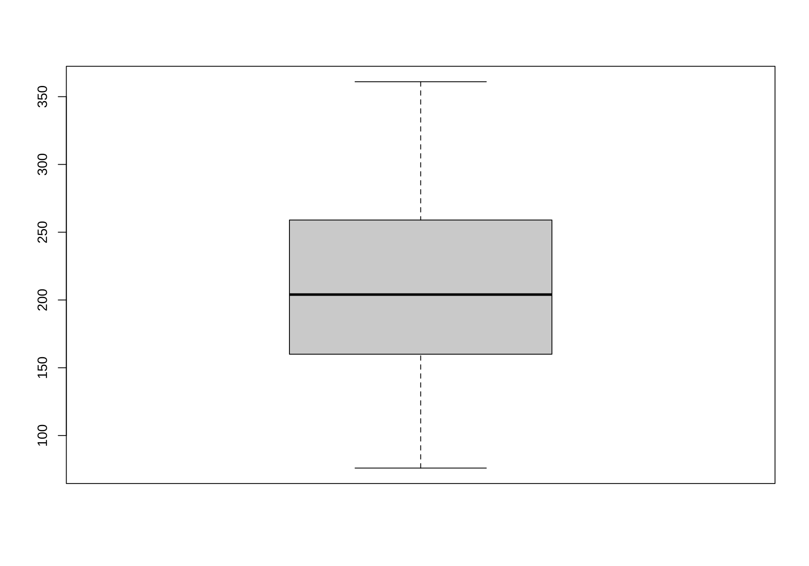

2.3.Displaying & Describing Data
Measures of spread and plots
Keywords
Spread and Plots
Last time
- Mean, median, mode
- Range
today: location and width; next class plots
This week
- Estimates of width (cont.)
- Explanatory and exploratory figures
- Best practices in figure design
- How data types drive figure design
- How to make effective tables
Recall this histogram
# A tibble: 3 × 3
Species mean median
<fct> <dbl> <dbl>
1 setosa 0.246 0.2
2 versicolor 1.33 1.3
3 virginica 2.03 2 Measures of dispersion
Range [
max value - min value] (cont.)Quartiles, interquartile range [
75th percentile - 25th percentile]Variance [ estimate = \(s^2\) =\(\frac{\Sigma(x_i - \bar{x})^2}{n-1}\), param = \(\sigma ^2\) = \(\frac{\Sigma(x_i - \mu)^2}{N}\) ]
Standard deviation [ estimate = \(s\) =\(\sqrt{s^2}\), param = \(\sigma\) = \(\sqrt{\sigma^2}\) ]
Coefficient of variation [ estimate = CV = \(\frac{s}{\bar{Y}}\), param = \(\frac{\sigma}{\mu}\) ]
Width (aka variability)
Variability of a population should not be ignored as simply noise about the mean, but is biologically important in its own right.
Variation has a true value from a population that we estimate from a sample.
Range
Range of weight of 46 chicks at 20 days since birth
data("ChickWeight")
chick20 <- ChickWeight[ChickWeight$Time == 20, ]$weight
chick20Max and Min in this dataset at time 20:
Range
If I take a sample of just 5 chicks from those 46 …
Small samples tend to give lower estimates of the range than large samples
. . .
So the sample range is a biased estimator of the true range of the population
So sample range is a biased estimator of the true range of the population.
Scenario
Salary range in a company will give a very good sense of the disparities between the ones in each end, but not a good sense of what the “average” employee earns
What can you do then?
You could calculate the median, sure, but what about the spread? Interquartile range would be a better measure here
Interquartile Range (IQR)
The difference between the 75th and 25th percentiles of the data. A.k.a., the “middle 50%” of the data.
- less biased estimator than range
- necessary for making boxplots
. . .
How?
. . .
IQR
Imagine sorting your data.
- The individual in the middle is the median.
- The first and last individuals mark the range
- The other two quantiles are the individuals ¼ and ¾ the way into your sorted list of data
- The difference between these is the interquartile range

IQR Example
Example: Running speeds (cm/s) of Tidarren spiders before voluntary amputation of pedipalp
Attention:
- Quantiles partition the data into \(n\) parts
- Quartiles partition the data into quarters
IQR Example
\(n=16\)
1st quartile: \(j=0.25n=4\)
3rd quartile: \(j=0.75n=12\)
If \(j\) is integer, \(\frac{Y_{j}+Y_{j+1}}{2}\)
\(\frac{Y_{4}+Y_{5}}{2}=\frac{2.31+2.37}{2}=2.34\)
\(\frac{Y_{12}+Y_{13}}{2}=\frac{3+3.09}{2}=3.045\)
Note: software may use slightly different algorithms.
IQR in R
summary() gives quartiles and max/min
# summary gives quartiles and max/min
summary(chick20) Min. 1st Qu. Median Mean 3rd Qu. Max.
76.0 161.0 204.0 209.7 259.0 361.0 The “long” route:
as.numeric(summary(chick20)[5] - summary(chick20)[2])[1] 98The shortcut
IQR(chick20)[1] 98Boxplots reveal quartiles
boxplot(chick20, names = "chicks day 20")
IQR can give us more information than the range, but it’s still only looking at the values “in the middle”
But there are metrics that look at all the values
Variance, Standard Deviation, & Coefficient of Variation all communicate how far individual observations are expected to deviate from the mean.
Because (by definition) the differences between all observations and the mean sum to zero (\(\sum{Y_i-\bar{Y}=0}\)), these summaries work from the squared difference between observations and the mean (\(\sum{(Y_i-\bar{Y})^2}\)).
Variance
Variance is a measure of dispersion of data points in a sample (or population) around the mean of the sample (or population). It is the expected squared difference between an observations and the mean.
Variance
Parameter
\[\sigma^2=\frac{\sum_{i=1}^{N}(Y_{i}-\mu)^2}{N}\] \(N\): number of individuals in population
\(\mu\): population mean
Estimate
\[s^2=\frac{\sum_{i=1}^{n}(Y_{i}-\bar{Y})^2}{n-1}\] \(n\): number of individuals in sample
\(\bar{Y}\): sample mean
Note: the numerator here is called “sum of squares”
Sample variance (shortcut)
\[s^2=\left(\frac{n}{n-1}\right)\left(\frac{\sum^{n}_{i=1}{Y^2_i}}{n}-\bar{Y}^2\right)\]
Variance Example
Lifespan of 12 forager bees (in hours).
2.3 2.3 3.9 4.0 7.1 9.5 9.6 10.8 12.8 13.6 14.6 18.2 18.2 19.0 20.9 24.3 25.8 25.9 26.5 27.1 30.0 33.3 34.8 34.8 35.7 36.9 41.3 44.2 54.2 55.8 65.8 71.1 84.7
\[\bar{Y} = \frac{\sum{Y_i}}{n} = \frac{919}{33}= 27.848\text{ hours}\]
# A tibble: 33 × 3
hours `Y-meanY` `(Y-meanY)^2`
<dbl> <dbl> <dbl>
1 2.3 -25.5 653.
2 2.3 -25.5 653.
3 3.9 -23.9 574.
4 4 -23.8 569.
5 7.1 -20.7 430.
6 9.5 -18.3 337.
7 9.6 -18.2 333.
8 10.8 -17.0 291.
9 12.8 -15.0 226.
10 13.6 -14.2 203.
# ℹ 23 more rows[1] 13520.96So
\[s^2 = \frac{13520.96}{33-1}=422.53\text{ hours}^2\]
Note: the unit here is hours squared. Also, note that we don’t divide by \(n\) but by \(n-1\).
4 differences from population mean:
s^2 instead of sigma^2; uses sample size instead of population size, taken as deviations from sample mean rather than population mean (which is not available); n-1, to account for bias caused by using Ybar (which is slightly closer to the individuals in the sample than the true mean is, because the sample mean is calculated from the sample too
Standard Deviation
Parameter
\[\sigma=\sqrt{\frac{\sum_{i=1}^{N}(Y_{i}-\mu)^2}{N}}=\sqrt{\sigma^2}\] \(N\): number of individuals in population
\(\mu\): population mean
Estimate
\[s=\sqrt{\frac{\sum_{i=1}^{n}(Y_{i}-\bar{Y})^2}{n-1}}=\sqrt{s^2}\] \(n\): number of individuals in sample
\(\bar{Y}\): sample mean
Standard Deviation
Using the previous example, with forager bees.
\[s^2 = \frac{13520.96}{33-1}=422.53\text{ hours}^2\] \[s = \sqrt{422.53}=20.555\] ## In R
Variance
var(beesDF$hours)[1] 422.5301Standard deviation
Coefficient of Variation (CV)
The variance and standard deviation increase with the mean.
The coefficient of variation allows for fair comparisons of variability between measures on different scales.
\[CV = 100\% \times \frac{s}{\bar{Y}}\]
In summary
Range: The difference between the largest and smallest values.
Interquartile Range: The difference between the 25th and 75th percentile.
Variance & Standard Deviation: The difference between observations & the mean.
Coefficient of Variation: A measure of the standard deviation that’s independent of the mean.
Variance, Standard Deviation or Coefficient of Variation?
Variance and standard deviation convey the same information and are used in many equations.
The coefficient of variation is less directly used in equations, but is ideal for comparing variation between different types of comparisons.
That’s all for today